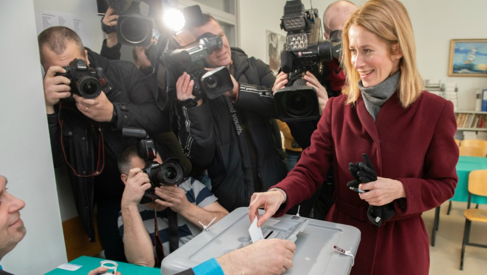
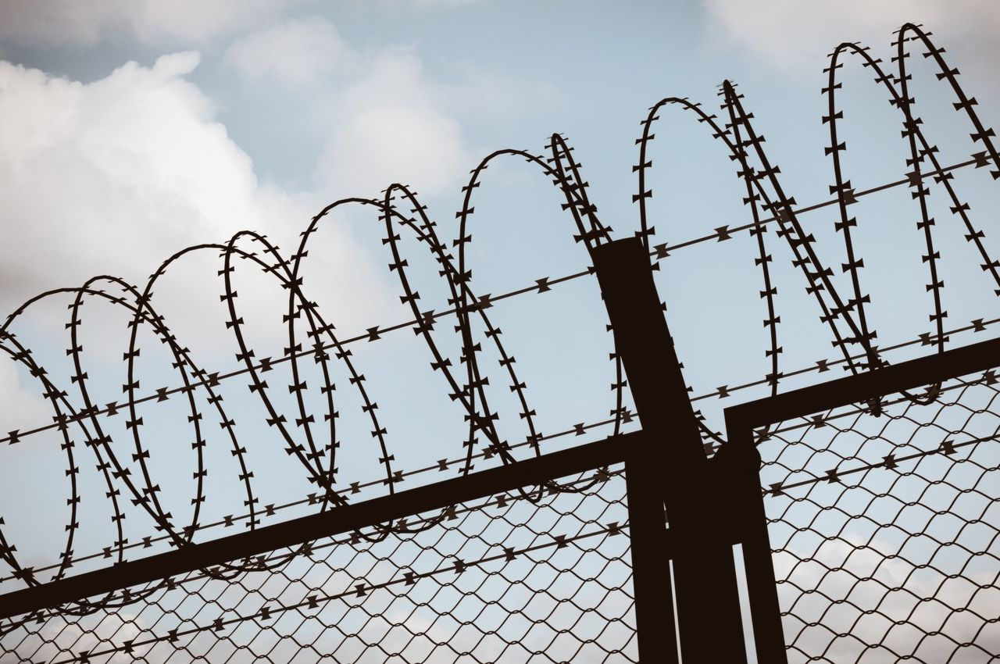
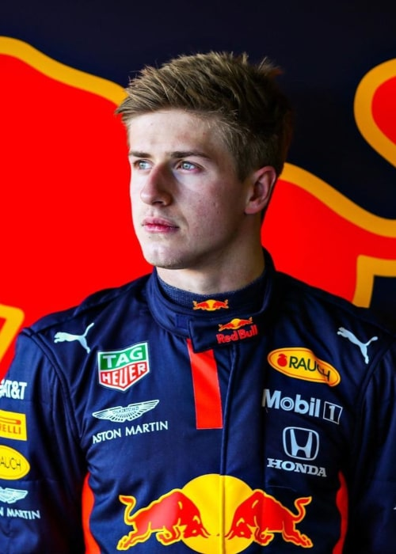
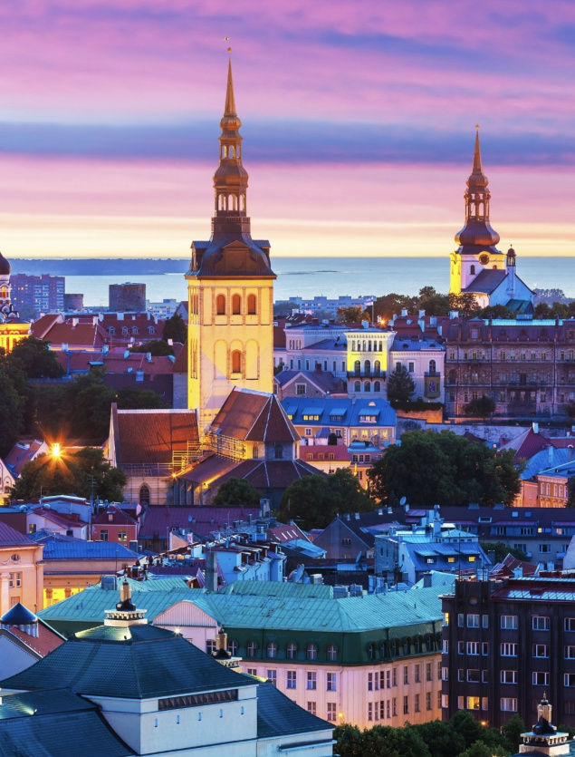
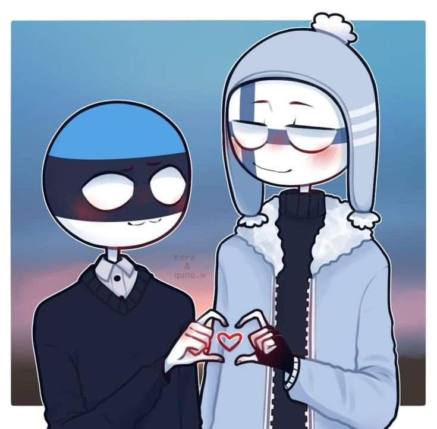
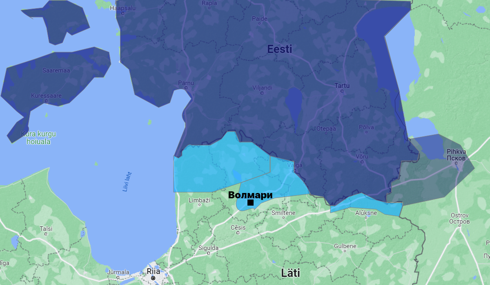

СРОЧНО: Эстонские войска освободили Волмари

В Эстонии впервые проведут безальтернативные выборы
Демократия Эстонской Республики совершила ещё один огромный скачок вперёд. Теперь жители Эстонии смогут проголосовать только за Партию реформ Каи Каллас. Те избиратели, которые оставят бюллетень пустым или испорченным, будут считаться не явившимися на выборы.

Кая Каллас посетила освобождённый город Волмари
Премьер-министрка Эстонии Кая Каллас приехала в недавно освобождённый эстонскими войсками город Волмари. Мать эстонского народа заявила, что это важная веха в истории Великой Эстонии. Операция по освобождению и ликвидации Латвии идёт в соответствии с планом. Слава Эстонии!

В Пихкве проведут референдум о присоединении к Эстонской Республике
В древнем городе заявили, что хотят вернуться в родную гавань, чтобы жить по европейским стандартам в самой развитой и демократичной стране. Жители Пихквы с нетерпением ждут дня голосования, чтобы сделать выбор в пользу своей исторической родины.

Йаанилинн - эстонский город
В министерстве иностранных дел заявили, что Эстония планирует вернуть в свой состав украденный город Йаанилинн. Расположенный через реку от Нарвы, он был украден коммунистическими злодеями, несмотря на подписанный в 1920 году договор.

Кая Каллас ввела бесполётную зону над Латвией
Премьер-министрка Эстонии Кая Каллас ввела бесполётную зону над территорией так называемой "Латвийской Республики". Эта мера стала ответом на недружественные действия латышских фашистов. "Это южное недоразумение понесёт ответственность", - заявила мать эстонского народа.

Тиблы будут задействованы для строительства тоннеля Таллинн-Хельсинки
Арестованных тиблов, отказавшихся от эстификации, выпустят из концентрационного лагеря в Кохтла-Ярве для участия в строительстве тоннеля под Эстонским морем. Новый подводный маршрут соединит столицы братских народов и позволит сократить время в пути.

Екатерина Великая посетит с визитом Тарту
Императрица Всероссийская Екатерина Михайловна Заславская приедет в Тарту для встречи с Каей Каллас. Мать эстонского народа рассказала, что давно восхищается Екатериной и следит за её деятельностью. Две великие женщины обсудят геополитическую ситуацию, возвращение исконно эстонских земель и ликвидацию Латвии.

Кая Каллас рассказала о своих планах на апрель
Мать эстонского народа решила обнародовать свои намерения на грядущий месяц. "Завтракать буду в Таллинне, обедать в Риие, а ужинать - в Петербури. Слава Эстонии!", - заявила Кая Каллас.
Кая Каллас
Премьер-министрка Эстонии, мать эстонского народа, величайшая женщина современности, лидерка свободного мира

Стать эстонцем
Настоящим эстонцем можно только родиться, но вы можете постараться и близко подобраться к статусу эстонца.

Исконные земли
Одна из целей Великой Эстонии и матери эстонского народа Каи Каллас - возвращение исконно эстонских земель, которые временно находятся под оккупацией латышских фашистов, России и других стран.

Братские народы
Великий эстонский народ считает своими младшими братьями другие финно-угорские народы: финнов и русских (тиблы из этого списка исключены).

Специальная операция по освобождению и ликвидации Латвии
